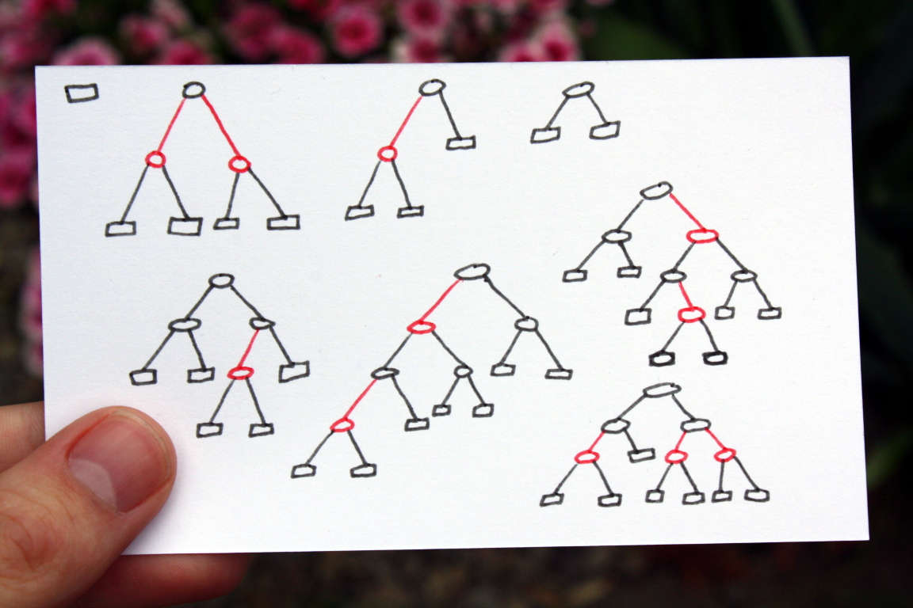
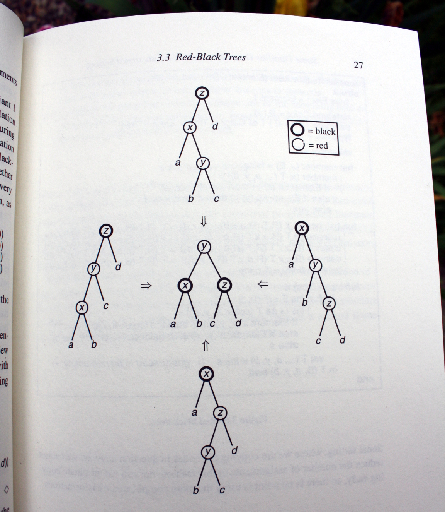

The easy way to implement a Red-Black tree
Posted on May 15, 2015
tl;dr: Complete implementation is at the bottom.
Red-Black trees are notorious for being nightmares of pointer manipulation. Instructors will show the theory, but won’t torture their students to implement one. Interviewers will avoid asking about it. They probably couldn’t do it themselves.
You should be vaguely familiar with how you might balance a tree. The details, however, are probably unnecessary for the purposes of an interview. – Gayle McDowell, Cracking the coding interview
If you’re proficient in a functional language, you owe it to yourself to implement a Red-Black tree. You’ll be one of the few people that can code a Red-Black tree on a whiteboard.
It will make you realize why people are so excited about the whole functional programming thing.
What is a Red-Black Tree?

A Red-Black tree is a balanced binary search tree. Every node is colored red or black. Three rules hold:
- No red node has a red child.
- Every path from the root to an empty node contains the same number of black nodes.
- An empty node is always black.
Draw a tree with these rules. Notice it’s always relatively-balanced. Try to draw one as unbalanced as possible. You won’t get far.
You can prove the maximum depth of a node is at most 2⌊log(n+1)⌋
Implementation
Let’s implement a set with a Red-Black tree. At minimum we’ll need a member function and an insert function.
Data
A tree can be empty, or it can be a node with two subtrees, a color, and an element.
data Tree a = Empty -- Empty does not need a color, it's always black.
| T Color (Tree a) a (Tree a)
data Color = R
| BMember
The member function searches for an element. It’s a binary search.
member :: Ord a => Tree a -> a -> Bool
member (T _ left e right) x | x == e = True
| x < e = member left x
| x > e = member right x
member Empty _ = FalseInsert
The insert function uses the function build, which is a constructor that makes sure the node is balanced.
insert :: Ord a => a -> Tree a -> Tree a
insert x s = let T _ a y b = ins s
in T B a y b
where
ins s'@(T color a' y' b')
| x < y' = build color (ins a') y' b'
| x > y' = build color a' y' (ins b')
| otherwise = s'
ins Empty = T R Empty x EmptyThere are four cases when build needs to adjust a node. It detects the case when a black parent has a red child with a red child. It shifts the nodes around to fix it. The solution is the same in every case. (Notice the right hand sides of build are the same).
build :: Color -> Tree a -> a -> Tree a -> Tree a
build B (T R (T R a x b) y c) z d = T R (T B a x b) y (T B c z d)
build B (T R a x (T R b y c)) z d = T R (T B a x b) y (T B c z d)
build B a x (T R (T R b y c) z d) = T R (T B a x b) y (T B c z d)
build B a x (T R b y (T R c z d)) = T R (T B a x b) y (T B c z d)
build color left x right = T color left x right
Afterwards
That’s it. You have a Red-Black tree.
If you want to learn more, read Purely Functional Data Structures by Chris Okasaki. I stole most of my implementation from this book. The build diagram is also from the book.
module RedBlackSet( empty
, member
, insert
) where
data Tree a = Empty
| T Color (Tree a) a (Tree a)
data Color = R
| B
empty :: Ord a => Tree a
empty = Empty
member :: Ord a => Tree a -> a -> Bool
member (T _ left e right) x | x == e = True
| x < e = member left x
| x > e = member right x
member Empty _ = False
insert :: Ord a => a -> Tree a -> Tree a
insert x s = let T _ a y b = ins s
in T B a y b
where
ins s'@(T color a' y' b')
| x < y' = build color (ins a') y' b'
| x > y' = build color a' y' (ins b')
| otherwise = s'
ins Empty = T R Empty x Empty
build :: Color -> Tree a -> a -> Tree a -> Tree a
build B (T R (T R a x b) y c) z d = T R (T B a x b) y (T B c z d)
build B (T R a x (T R b y c)) z d = T R (T B a x b) y (T B c z d)
build B a x (T R (T R b y c) z d) = T R (T B a x b) y (T B c z d)
build B a x (T R b y (T R c z d)) = T R (T B a x b) y (T B c z d)
build color left x right = T color left x right